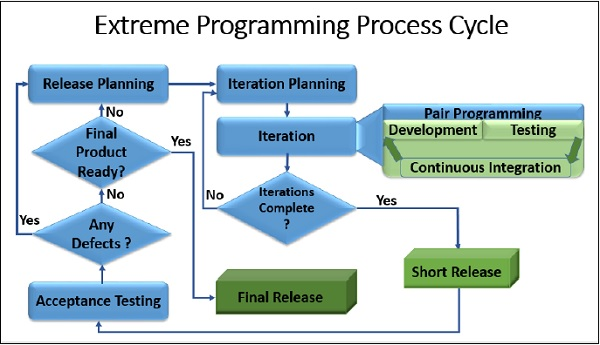

Extreme Programming (XP) on üks tuntumaid agiilseid tarkvaraarenduse metoodikaid, mille eesmärk on parandada tarkvara kvaliteeti ja reageerida kiiresti muutuvatele kliendinõuetele. Metoodika loojaks on Kent Beck ning see põhineb viiel põhiväärtusel: suhtlus, lihtsus, tagasiside, julgus ja austus. Mõiste „extreme” viitab ideele viia head arenduspraktikad äärmuseni (nt kui testimine on kasulik, siis testitakse pidevalt).
XP arendusprotsess on iteratiivne ning koosneb järgmistest korduvatest etappidest:
XP on konkreetne raamistik ega oma ametlikke alamvariante. Praktikas rakendatakse XP-d aga peamiselt kahel viisil:
XP arendustsükli visuaalne kujutis:

XP kõige olulisem omadus on pidev ja kiire tagasiside.
Mida hiljem vigu avastatakse, seda kulukam on nende parandamine. XP võimaldab tagasisidet saada erinevatel ajatasemetel:
See aitab meeskonnal ehitada õiget lahendust ning säilitada kõrge tarkvara kvaliteedi.
| Eelised | Puudused |
|---|---|
| Kõrge kvaliteet tänu pidevale testimisele (TDD) | Paaristöö võib alguses tunduda kulukas |
| Väga paindlik ja muudatustele avatud | Nõuab kliendi pidevat kaasatust |
| Selge ja hooldatav kood (refaktoreerimine) | Dokumentatsiooni on vähem kui traditsioonilistes mudelites |
| Realistlikud tähtajad ja väiksem stress arendajatele | Raske rakendada suurtes ja hajutatud meeskondades |